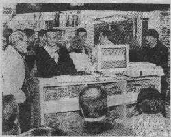

da il Centro del 05 marzo 1995
Cyberspazio piu' vicino.
Incontro su Internet
E' piu' vicino da ieri il villaggio elettronico, un'area vastissima
frequentata da milioni di abitanti che vi entrano attraverso il computer
e una scatoletta magica, il modem, collegata alla rete telefonica.
Erano in tanti ieri ad avvicinare Internet, la rete di interconnessione
mondiale, nel corso di un dibattito tenuto alla libreria Feltrinelli.
L'appuntametno e' stato organizzato dall'associazione "Metro Olografix",
una BBS (Bullettin Board System) di Pescara, nata nel maggio '94. L'intento, come ha ricordato il presidente Stefano Chiccarelli, e'
stato quello di farsi conoscere. La telematica e' il mezzo di comunicazione
del futuro. Se ne parla con sempre maggiore frequenza ma finora e'
rimasta circoscritta in un ambito ristretto, ai culturi dei romanzi di
William Gibson che nel romanzo "Neuromante" invento' un neologismo
ormai diffusissimo, cyberspazio: e' lo spazio interno alle reti di computer,
pieno di grandi banche dati.
La nuova frontiera della comunicazione e' stata affrontata
attraverso una serie di interventi e prove pratiche, mediante computer,
che hanno evidenziato potenzialita' e problemi connessi alla navigazione.
Savcerio Santamaita, docente della facolta' di Lettere dell'universita'
di Chieti ha sottolineato soprattutto l'aspetto innovativo della nuova
forma di comunicazione ."C'e' un capovolgimento nella logica della
comunicazione di massa", ha detto Santamaita, "che finora ha
ruotato intorno al mezzo televisivo. Una stazione trasmette e molti ricevono
il messaggio .Con le reti telematiche e' possibile la comunicazione fra
persona e persona : una formula finora poco influenzata da centri di potere
che controllano tecnologie e capitali. L'accesso e l'uso delle reti e'
affidato alla liberta' individuale. Persone che non si conoscono",
ha concluso Santamaita,"hanno la possibilita' di dialogare a grandissima distanza fra loro".
Quali argomenti si intrecciano sulle reti telematiche? Si puo'
trovare di tutto. Alcuni quotidiani si connettono con Internet per raggiungere
un pubblico diverso e piu' ampio . L'associazione Metro Olografix ha un'area
di discussione sulla tossicodipendenzae ha in progetto la realizzazione
di una fanzine (Un giornale per appassionati) elettronica. Navigando nel mare telematico si puo' raccolgiere e lanciare qualsiasi messaggio. Molte
BBS sono collegate fra loro e, quindi , le varie banche dati diventano
accessibili.
La piu' grande rete di interconnessione e' apputno Internet. Attivato
25 anni fa dal ministero della difesa degli Stati Uniti per rendere operativi
vari ministeri anche in caso di conflitti nucleari, Internet e' stata poi
apeta al mondo dell'universita'. Successivamente e' stato allargato al
mondo del comemrcio, come ha ricordato Alfonso Micucci, ricercatore alla
facolta' di Ingegneria dell'Universita' di Bologna. E, da poco tempo, a
tutto il mondo.
L'accesso a Internet, come sovrastruttura, e' gratuito ma per
accedere alla rete mondiale c'e' bisogno di uno snodo. A Pescara non ne
esistono per ora, il piu' vicino e' a Milano. Dal momento che la connssione
avviene tramite telefono ecco che i costi salgono. All'abbonamento , che
va da 200 a 500mila lire l'anno, bisogna aggiungere il costo della telefonata interurbana oppure 10mila lire ogni mezz'ora di navigazione nel programma
i esplorazione di Internet. Quando verra' realizzato uno snodo a Pescara
con il costo di uno scatto di telefonata urbana sara' possibile la connessione,
seguendo precise direttive per cercare file o documenti.
La rapida diffusione delle reti di interconnessione ha creato
problemi di natura giuridica, esplosi un paio di anni fa' quando la Fiannza
diede un duro colpo all'universo telematico per effetto della scoperta
di programmi copiati.
Anfrea Monti, specializzato in diritto informatico all'universita'
"La Sapienza" di Roma, ha ricordato che l'episodio ha nuociuto
al movimento. Telematica e' diventato sinonimo di pirateria. Intanto pero'
sono state emanate due leggi che tutelano i programmi e reprimono i reati
informatici. Non resta che avventurarsi nel cyberspazio magari contattando
per saperne di piu' Neuromante BBS (085-4518741) e Memphis BBS (085-4455065)
altri articoli sull'evento dal messaggero

Metro Olografix ACT 2001 :: copyright dei rispettivi detentori
sito a cura di .nezmar. e ah:pook :: contact: info@olografix.org